Kihokucho, Mie: things to do, food and stays
Kihokucho · Mie
Kihokucho
Highlighted on the Mie map.
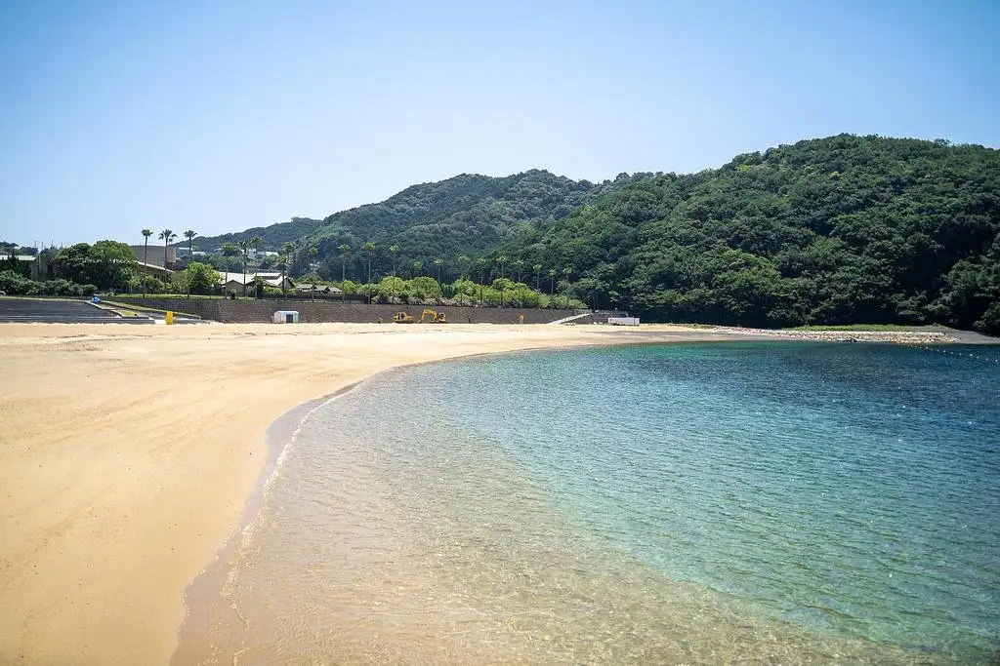
Stay
Villa お伽噺
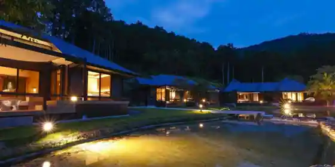
Villa O Togibanashi
Inn at Kishunobishokuto Onsen in Higashinagashima, Kihokucho.
ホテル季の座
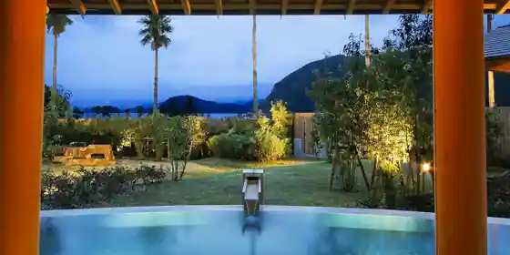
Hotel Ki No Za
Hotel at Kihokusennen Onsen in Higashinagashima, Kihokucho.
うまし宿 漁亭 美乃島
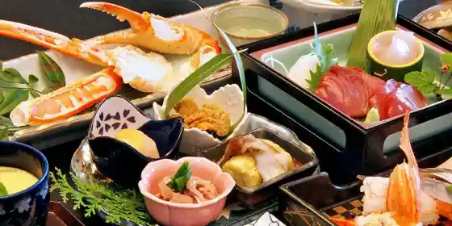
Umashi Yado Ryo Tei Yoshino Shima
Inn in Kinagashimakufurusato, Kihokucho with local seafood dinners.
割烹の宿 美鈴
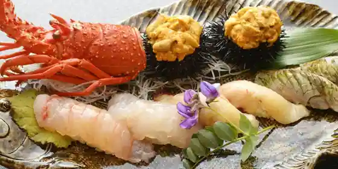
Kappo No Yado Misuzu
Log&Sauna Jyouno-hama
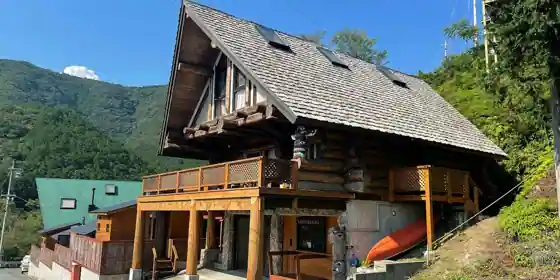
Log&Sauna Jyouno-hama
Inn in Higashinagashimashironohama, Kihokucho with a sauna.
孫太郎オートキャンプ
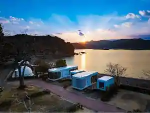
Magotaro Otokyanpu
Ｖｉｌｌａお伽噺
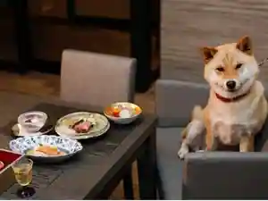
Villa O Togibanashi
旅館紀の國
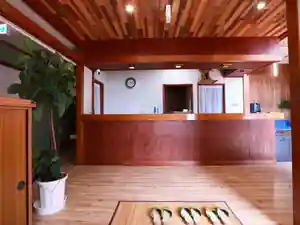
Ryokan Ki No Kuni
LOG AND SAUNA JYOUNO-HAMA
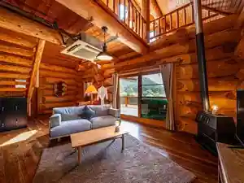
LOG AND SAUNA JYOUNO-HAMA
Inn in Higashinagashima, Kihokucho with a sauna.
四季活魚の宿 紀伊の松島
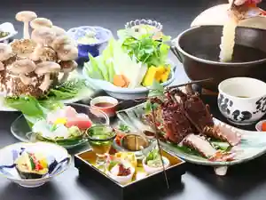
Shiki Ikeuo No Yado Ki No Matsushima
酒蔵と地魚の宿桃太郎
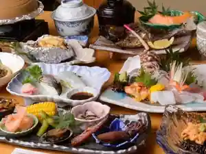
Shuzo To Jizakana No Yado Momotaro
Inn in Furusato, Kihokucho with local seafood dinners.
あづま
Azuma
Dining
炭火割烹 稲米舎
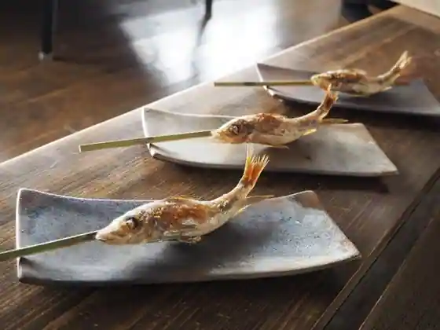
Sumibi Kappo Tomai Sha
卵卵ふわぁーむ 本店
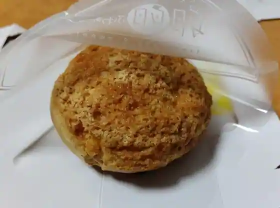
Tamago Tamago Fuwaamu Hon
かい鮮や
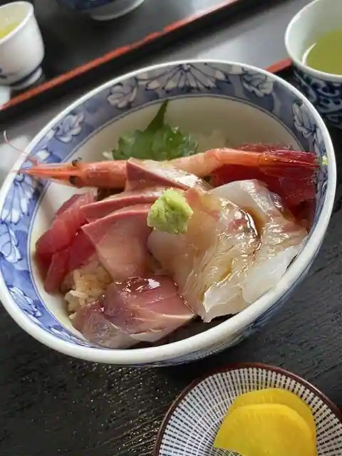
Kai Sen Ya
万両寿し
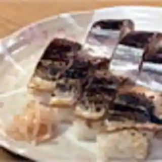
Manryo Hisashi Shi
まるます
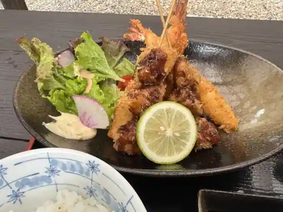
Marumasu
道の駅 紀伊長島マンボウ
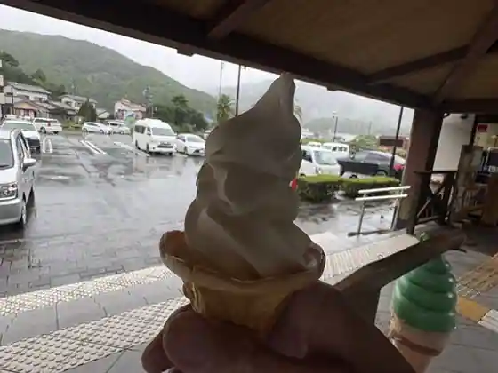
Michi No Eki Ki Nagashima Manbou
一冨士
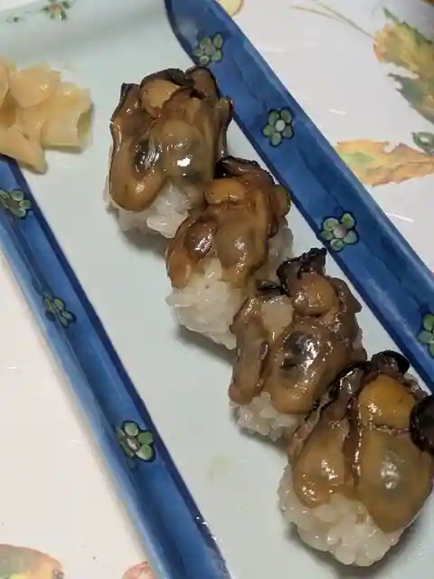
Ichi Fuji
城のこし
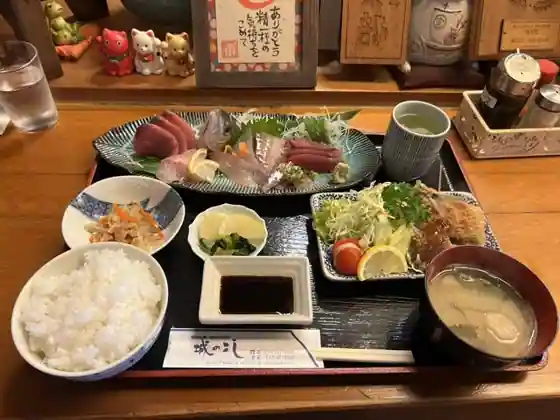
Shiro Nokoshi
種まき権兵衛家カフェレスト
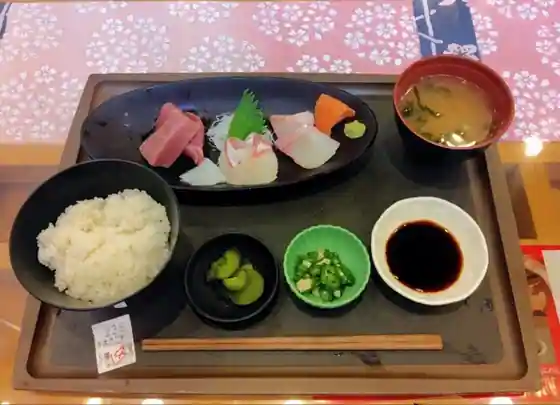
Tanemaki Gonbe Ie Cafe Resuto
らーめん いろは
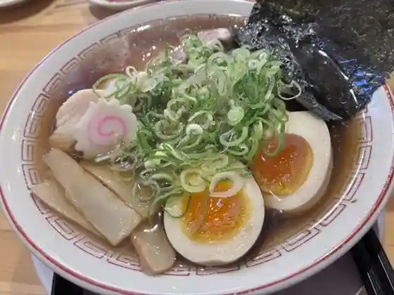
Ramen Iroha
道瀬食堂
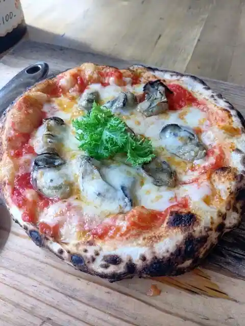
Doze Shokudo
のえる
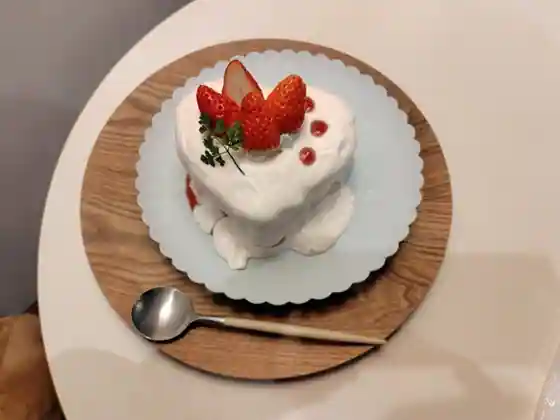
Noeru
道の駅 海山
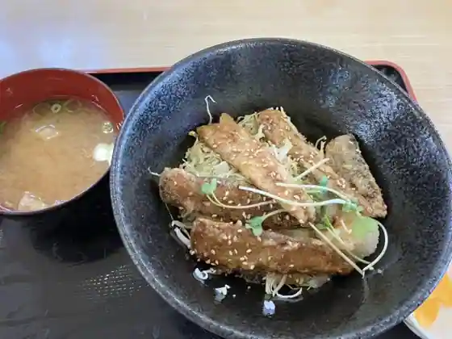
Michi No Eki Umiyama
一力庵
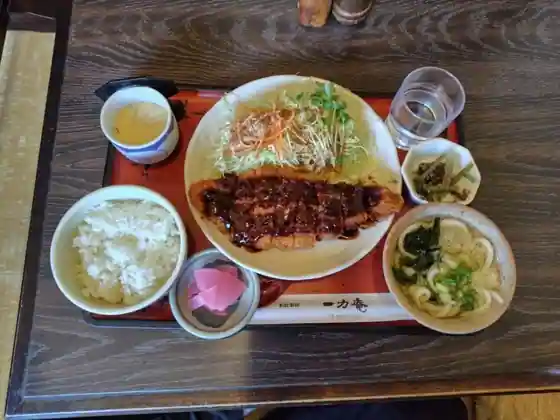
Ichiriki Iori
与太呂
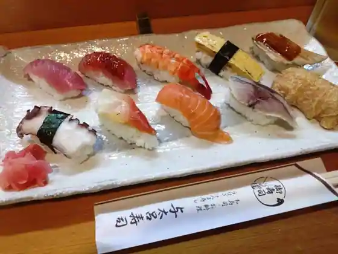
Yota Ro
かっぱ倶楽部
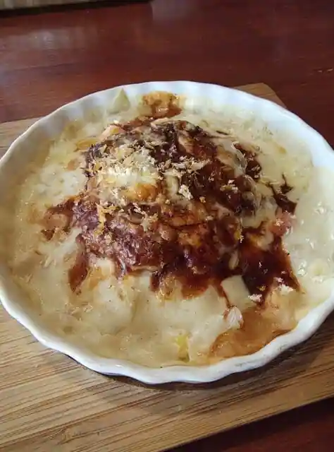
Kappa Kurabu
世古牡蠣店
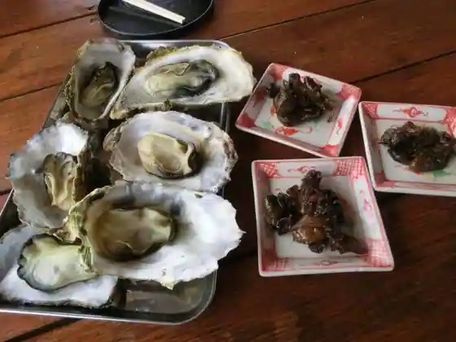
Seko Kaki
お食事処 まんぼう
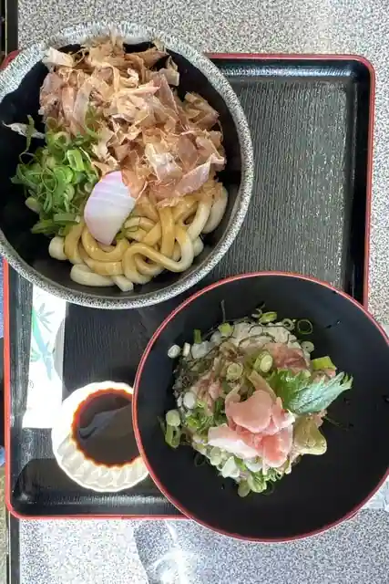
O Shokuji Tokoro Manbo
楽天茶寮
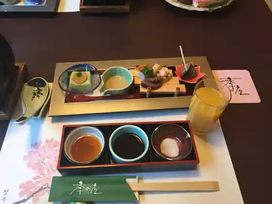
Rakuten Charyo
あみ焼き 煖だん
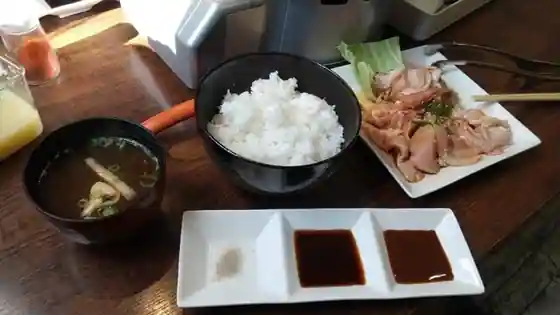
Ami Yaki Dan Dan
Sights
Shirubauiiku Jakkan Aki Ari ! Shoshinsha Demo Anshin no Gaido Tsuki SUP Tour ! Nippon Dekokodake !? Kawa Kara Umi Made Tabi Suru SUP SUP to Tentosauna De Tsuitachi Mankitsu ♪
Tanemaki Gombe Village
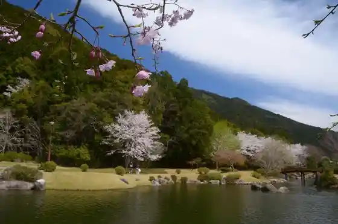
Shiro no Hama Beach
Kuro Hama Beach
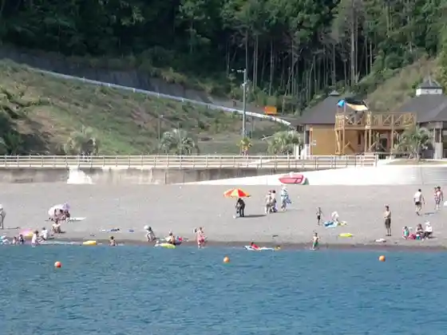
Wa Gu no Hama Beach
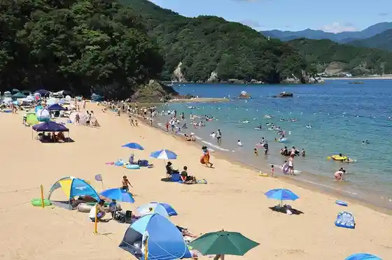
Furusato Beach
Shiro no Hama Puru & Beach
Kakiuchi Engei (Mikan Kari)
Shi Kami Terasu
Umakoshi Toge (Kumano Kodo Ise Michi)
Kiaora Paddle
Tsuri Hori Masanori Maru
Tanemaki Gombe Yuki Hi Oyobi Zumbera Ishi
Bin Ishiyama
Furusato Kaigan Campground
Roadside Station (Umiyama)
Isseki Toge Heiho Toge Kumagatanimichi (Kumano Kodo Ise Michi)
Shi Kami Toge (Kumano Kodo Ise Michi)
Takatsuka Yama Lookout
Furusato Hodo Tonneru (Kyu Umino Suido)
Doze Hodo Tonneru (Kyudo Se Suido)
Umiyama Local History Museum
Oshiro Park
Kubo Farm Ichigo Kari
Nagashima Shrine
Shima Kachi Shrine
Toyora Shrine
Dai Masa Tera Koshi E Tenjo
Roadside Station (Kii Nagashima Mambo)
Shima Kachi no Kaishoku Domon (Tenma Hora)
Yonaki Jizo
Umakoshi Ichiri Tsuka (Kumano Kodo Umakoshi Toge)
Anraku Tera
Ko no Ura Tonneru (Kyu Nagashima Suido)
Sennen Village kodo Tenisukoto